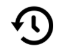
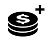

Selamat datang di Slot Video SUPER SYNC - ditemakan seperti slot klasik dengan simbol klasik. Fitur permainan dengan sinkronisasi gulungan, fitur putaran gratis, Roda Kemenangan dan banyak lagi fitur yang mengasyikkan.
TENTANG PERMAINAN
Super Sync dimainkan dengan 27 cara. Permainan ini memiliki delapan simbol biasa, satu kartu Liar dan satu simbol putaran Gratis.
SINKRONISASI GULUNGAN
Pada setiap putaran, ada peluang acak sinkronisasi gulungan atas dua gulungan berdampingan dengan simbol identik. Sinkronisasi gulungan pada dua gulungan dapat tampak berdampingan pada 3 gulungan mana pun. Saat putaran, dua gulungan tersinkronisasi dapat meluas untuk memberi putaran super, di sana seluruh 3 gulungan menjadi identik.
Berputar bebas
3 simbol putaran gratis memicu 5 putaran gratis. 2 simbol putaran gratis, memicu ulang putaran gratis melalui roda yang memberi hingga 10 putaran gratis atau 5 putaran super. 3 simbol putaran gratis, memberi 5 putaran super, setelah putaran super, setiap putaran gratis dimainkan sebagai putaran gratis standar.
CARA BERMAIN
-
Pilih denominasi taruhan/koin Anda.
-
KLIK (UNTUK KOMPUTER) ATAU SENTUH (UNTUK PONSEL) TOMBOL PUTARAN UNTUK MEMULAI SIKLUS PERMAINAN.
TOMBOL PERMAINAN
|
Ikon |
Komputer |
Mobile |
Aksi |
|
|
Putaran | Putaran | Memulai siklus tunggal |
| Taruhan Maks | (terkandung dalam layar Seleksi Taruhan dalam menu pengaturan) | Mengatur konfigurasi taruhan ke tingkatan taruhan maksimal. Tombol putaran ditekan untuk memulai | |
|
|
Permainan otomatis | Tahan Putaran untuk Permainan otomatis (atau terkandung dalam menu pengaturan) | Memunculkan layar menu menunjukkan semua Opsi Permainan Otomatis yang tersedia dalam permainan untuk memulai berbagai siklus secara simultan. |
|
|
Seleksi Taruhan | Seleksi Taruhan (atau terkandung dalam menu pengaturan) | Memunculkan Opsi Taruhan agar pemain memilih tingkatan taruhan mereka. |
|
|
Menu Pengaturan | Menu Pengaturan | Membuka layar pengaturan terpisah yang menawarkan berikut ini: Beranda; Audio; Pengaturan Permainan; Sejarah; Info/Bantuan dan Kasir (bila diperlukan) |
|
|
Audio | (Area pengaturan utama tersedia dalam menu pengaturan) | Komputer - membuka menu pengaturan audio agar pemain dapat menyalakan atau mematikan musik atau efek secara terpisah. |
|
|
Permainan Turbo | (tersedia dalam menu pengaturan Permainan) | Memulai perubahan dalam kecepatan gulungan ke Putaran Cepat |
TOMBOL PENGATURAN
| Symbol | Ikon | Perilaku |
| Riwayat Permainan |  | Menunjukkan pemain daftar siklus permainan yang dimainkan dalam sesi permainan itu. |
| Pengaturan Taruhan |
 |
Dari sini pemain dapat menentukan nilai taruhan untuk permainan, atau mambuat seleksi atas opsi lain yang tersedia. |
| Permainan otomatis |
|
Memulai halaman tempat berbagai opsi Permainan otomatis standar dan perpanjangan dapat dipilih dan dimulai, termasuk Batas Kekalahan (bila berlaku) |
| Pengaturan Permainan |
|
Menunjukkan berbagai opsi pengaturan umum yang tersedia (mis. Pengaturan Audio yang bisa dipilih pemain agar bisa menentukan suara mana yang ingin mereka putar saat sesi) |
| Beranda |
|
Keluar dari sesi permainan saat itu (setelah tindakan akhir) dan mengembalikan layar ke halaman Menu Permainan Utama Operator. |
INFO PERMAINAN LAIN
-
Kemenangan yang bertepatan pada cara berbeda ditambahkan bersama dan dibayarkan untuk pemain.
-
Nilai Koin - Menampilkan harga taruhan secara teori dari pengaturan saat itu. Semua kemenangan ditunjukkan dalam koin yang harus digandakan oleh nilai koin untuk mengubah kemenangan Hadiah Tunai.
-
Taruhan - Menunjukkan nilai taruhan atas pengaturan saat itu. Ukuran taruhan adalah 1 koin dikalikan jumlah payline yang tetap.
-
Taruhan Maks (HANYA Komputer) - Menentukan nilai koin ke yang terbesar yang ada.
-
TARUHAN TOTAL ADALAH NILAI KOIN DIKALIKAN PENGGANDA TARUHAN YAITU 10 KOIN.
-
Tombol Putaran - Memulai permainan. Bila gulungan berputar, tombol putaran berubah menjadi Tombol Stop Turbo. Tekan Tombol Stop Turbo untuk langsung menghentikan gulungan.
-
Permainan Otomatis - Anda dapat menentukan permainan untuk diputar tanpa harus menekan tombol putaran setiap kali. Pilih jumlah putaran ke permainan otomatis dengan menekan tombol Permainan Otomatis (atau dengan menahan Tombol Putaran untuk membuka Menu Permainan Otomatis (untuk Mobile)). Bila tersedia, Anda dapat memilih kondisi tambahan untuk bila menghentikan permainan otomatis dalam Pengaturan Permainan. Batas kekalahan dalam versi permainan klien mencegah Anda untuk kalah melampaui batas yang ditentukan selama sesi permainan otomatis Anda. Untuk menghentikan permainan otomatis secara manual, tekan tombol Stop Permainan Otomatis.
-
Menang - Menampilkan kemenangan untuk kemenangan saat itu atau yang terakhir yang sudah dibayar.
-
Tunai/Koin - Menampilkan neraca akun Anda sebagai Tunai (nilai uang) atau Koin (jumlah kredit) tergantung pilihan pemain. Pengaturan standar adalah Tunai.
KEMBALI KE PEMAIN
-
Keseluruhan pengembalian ke pemain secara teori adalah 95.98%.
INFORMASI TAMBAHAN
-
Semua kombinasi kemenangan dibayarkan dari kiri ke kanan pada kombinasi cara, dengan setiap kemenangan dimulai pada Gulungan 1, kecuali kombinasi acak, yang dapat terjadi pada posisi mana pun.
-
Kemenangan yang dicapai dalam Fitur dibayar sebagai tambahan pada kombinasi baris.
-
Bila terjadi gagal fungsi permainan perangkat keras/perangkat lunak, semua taruhan permainan yang terdampak dan pembayaran menjadi batal dan semua taruhan yang terdampak didanai kembali.
-
Kemenangan maksimal dalam permainan memiliki batas tertinggi yang setara dengan €250,000.
-
Ini adalah versi peraturan permainan 1.0, tanggal 22/02/2019.